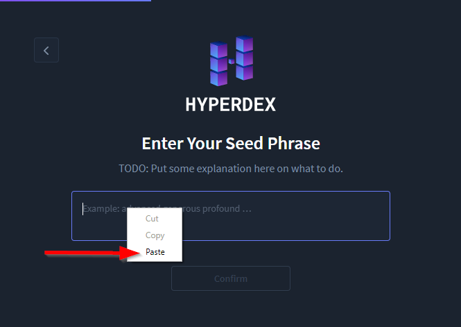
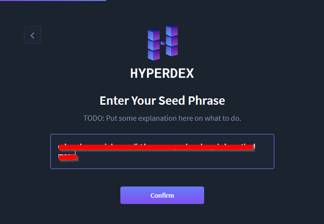
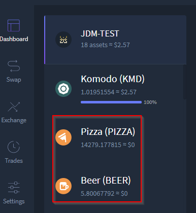
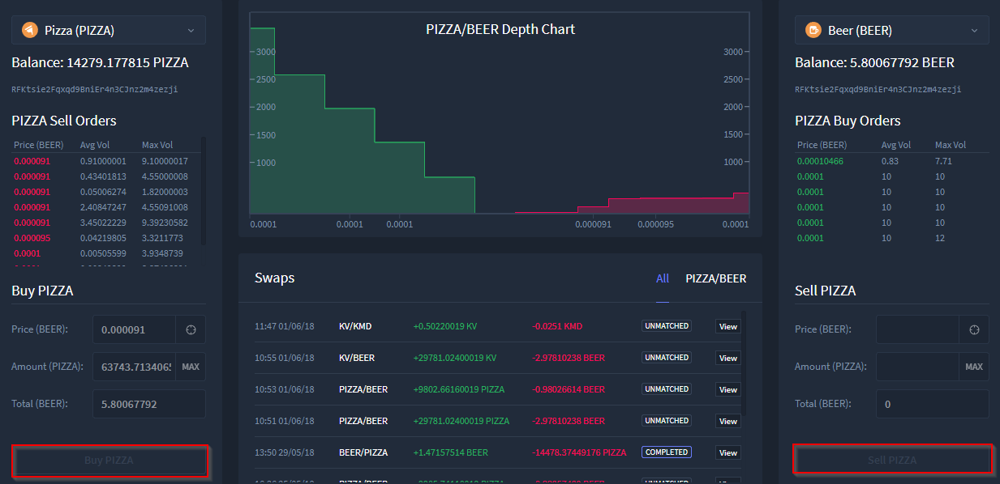
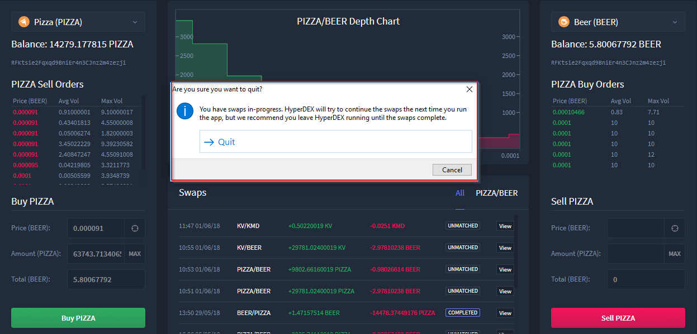

HyperDEX-0.1.0-alpha.5-Enhancements
- Fixed pasting a multiline seed phrase in the "Restore Portfolio" view.
- Could not paste into the Restore Portfolio view in previous versions, this has now been corrected


- Fixed all the problems with number inputs.
- Added icons for all the Komodo asset chains. You can now trade PIZZA and BEER in style!
- All Komodo asset chain icons have been updated (in this example BEER and PIZZA

- The Buy/Sell buttons are now disabled while the order is placed to prevent accidental double-buy and to reduce chances of marketmaker problems.

- HyperDEX will present a confirmation dialog if you try to quit while you have swaps in progress.
